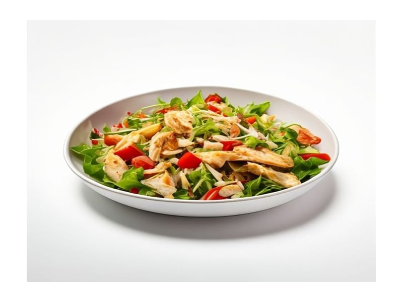

Polskie obiadki
Sałatka Cezar z kurczakiem
Sałatka Cezar z kurczakiem: 10 g białka, 145 kcal, 7 g węglowodanów i 9 g tłuszczu na 100 g. Kategoria: Polskie obiadki.
Kalorie145 kcalna 100 g
Białko / proteiny10 g
Węglowodany7 g
Tłuszcz9 g
Cena (szac.)~3,59 złza 100 g
Ceny zaktualizowano: maj 2026 (szacunek — ceny w popularnych supermarketach)
Porcja: miska (320g)
| Kalorie | 464 kcal |
|---|---|
| Białko | 32 g |
| Węglowodany | 22.4 g |
| Tłuszcz | 28.8 g |
| Cena (szac.) | ~11,49 zł |
Szczegółowe składniki odżywcze na 100 g
| Wartość energetyczna (kalorie) | 145 kcal |
|---|---|
| Białko (proteiny) | 10 g |
| Węglowodany | 7 g |
| Tłuszcz | 9 g |
| Tłuszcze nasycone | 2.5 g |
| Tłuszcze nienasycone | 6.5 g |
| Witaminy i minerały | Witamina A, Żelazo, Tiamina (B1) |
| Współczynnik kcal / 1 g białka | 14.5 |
| Cena produktu (szac. za 100 g) | ~3,59 zł |
| Cena za 100 g białka (szac.) | ~35,91 zł |